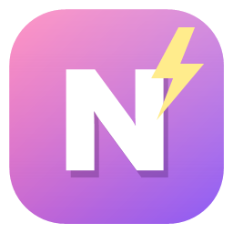
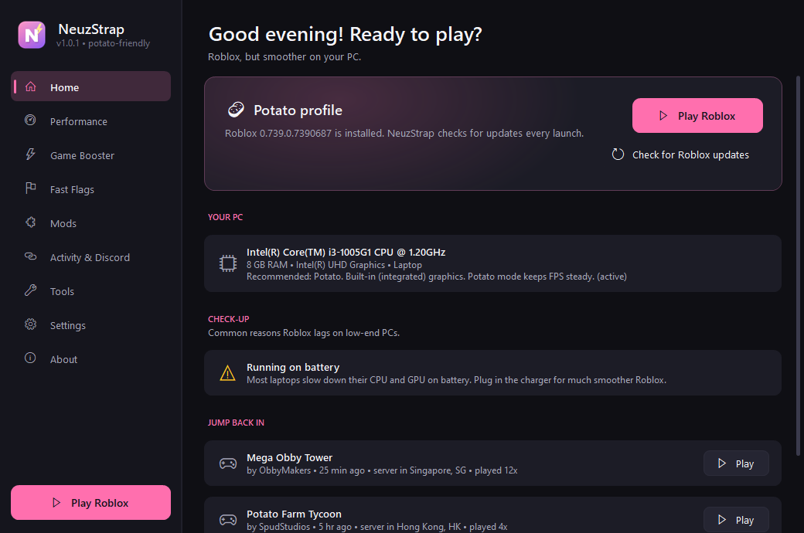

NeuzStrap
The potato-friendly Roblox launcher.
A ~0.5 MB Roblox bootstrapper built around one question: how do you make Roblox playable on a weak PC? It scans your hardware, picks a profile, and only uses the FastFlags Roblox actually accepts. No fake "FPS boost" flags.
- One-click Balanced, Potato and Ultra Potato profiles
- Game Booster: CPU priority, free RAM, force the strong GPU
- Server location notice, one-click rejoin, Discord Rich Presence
- Cleaner, mods, custom cursors and a FastFlag editor
